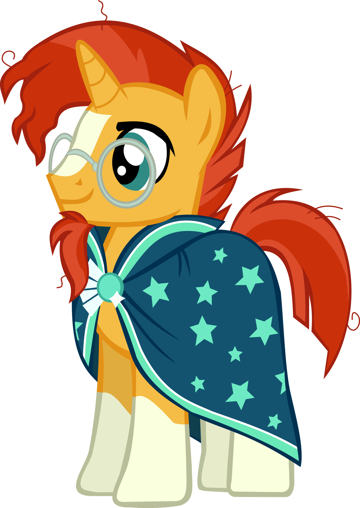

Sunburst tem uma certa dificuldade em socializar, ele é mais reservado e prefere a companhia de livros e objetos inanimados.
O personagem apresenta também ter hiperfoco em magia, ele é conhecido por ser estudioso e
ter um grande conhecimento de magias, ele se anima com artefatos antigos também.
O Sunburst também se comunica de forma bem direta.